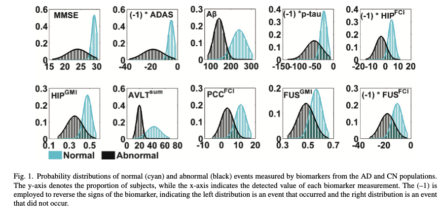

Generative process#
Definitions#
We can generate participants’ biomarker data according to EBM (Event-Based Model).
\(S \sim {\rm UniformPermutation}(\cdot)\)
\(S\) follows a distribution of uniform permutation. That means the ordering of biomarkers is random.
\(k_j \sim {\rm DiscreteUniform}(N)\)
\(k_j\) follows a discrete uniform distribution, which means a participant is equally likely to fall in a progression stage (e.g., from \(0\) to \(4\), where \(0\) indicate this participant is healthy.)
Note that \(\sim\) in statistics indicates that this variable follows a certain distribution. Here, it means that the biomarker values is drawn from that distribution.
Parameters#
\(z_j\): \(1\) if the participant is diseased; otherwise \(0\).
\(I(True) = 1\), \(I(False) = 0\)
\(S\) denotes the ordering of a sequence of biomarkers.
\(N\): number of observed biomarkers.
\(n\): a specific biomarker; e.g., biomarker \(b\).
\(J\): number of participants.
\(j\) denotes a participant.
\(X\) is observed values of biomarkers; it is a matrix of dimension of \(N \times J\) or \(J \times N\).
\(k\): a scalar whose value is the participant’s stage of the disease
\(K\): number of disease stages
\(S(n)\) means the disease stage that a specific biomarker \(n\) indicates.
\(k_j\): disease stage that a participant is at.
\(X_{nj}\) means the observed value of the biomarker \(n\) in participant \(j\).
\(\theta_n\) is the parameters for the probability density function (PDF) of observed value of biomarker \(n\) when this biomarker has been affected by the disease. Let’s assume this distribution is a Gaussian distribution.
\(\phi_n\) is the parameters for the probability density function (PDF) of observed value of biomarker \(n\) when this biomarker has NOT been affected by the disease.
Simulation#
We are going to generate biomarker values for each participant by randomly drawing from distributions defined by \(\theta\) or \(\phi\). We will base our generation on Chen’s paper (Figure 1).

import numpy as np
import scipy.stats as stats
import altair as alt
import pandas as pd
import matplotlib.pyplot as plt
biomarker_names = [
'MMSE', 'ADAS', 'AB', 'P-Tau', 'HIP-FCI',
'HIP-GMI', 'AVLT-Sum', 'PCC-FCI', 'FUS-GMI', 'FUS-FCI']
biomarker_names
# cyan, normal
theta_means = [28, -6, 250, -25, 5, 0.4, 40, 12, 0.6, -10]
# black, abnormal
phi_means = [22, -20, 150, -50, -5, 0.3, 20, 5, 0.5, -20]
# cyan, normal
theta_std_times_three = [2, 4, 150, 50, 5, 0.7, 45, 12, 0.2, 10]
theta_stds = [std_dev/3 for std_dev in theta_std_times_three]
# black, abnormal
phi_std_times_three = [8, 12, 50, 100, 20, 1, 20, 10, 0.2, 18]
phi_stds = [std_dev/3 for std_dev in phi_std_times_three]
# theta_means = [1, 3, 5, 6, 8, 0, 4, 2, 7, 9]
# theta_stds = [0.3, 0.5, 0.2, 1.3, 3.3, 2.2, 0.8, 0.9, 0.7, 0.6]
# phi_means = [32, 31, 34, 36, 38, 39, 30, 33, 35, 37]
# phi_stds = [6.3, 7.4, 9.4, 4.9, 2.5, 5.9, 6.4, 7.7, 8.0, 3.0]
def plot_distribution_pair(ax, mu1, sigma1, mu2, sigma2, title):
xmin = min(mu1 - 4*sigma1, mu2-4*sigma2)
xmax = max(mu1 + 4*sigma1, mu2 + 4*sigma2)
x = np.linspace(xmin, xmax, 1000)
y1 = stats.norm.pdf(x, loc = mu1, scale = sigma1)
y2 = stats.norm.pdf(x, loc = mu2, scale = sigma2)
ax.plot(x, y1, label = "Normal", color = "cyan")
ax.plot(x, y2, label = "Abnormal", color = "black")
ax.fill_between(x, y1, alpha = 0.3, color = "cyan")
ax.fill_between(x, y2, alpha = 0.3, color = "black")
ax.set_title(title)
ax.legend()
fig, axes = plt.subplots(2, 5, figsize=(20, 10))
for i, biomarker_name in enumerate(biomarker_names):
ax = axes.flatten()[i]
mu1 = theta_means[i]
mu2 = phi_means[i]
sigma1 = theta_stds[i]
sigma2 = phi_stds[i]
plot_distribution_pair(
ax, mu1, sigma1, mu2, sigma2, title = biomarker_name)
def simulate_ebm(N, J, theta_means, theta_std_dev, phi_means, phi_std_dev):
"""
Simulate an Event-Based Model (EBM) for disease progression.
Args:
N (int): Number of biomarkers.
J (int): Number of participants.
Returns:
tuple: A tuple containing:
- S (numpy.ndarray): The random permutation representing the order of biomarker implication.
- kjs (numpy.ndarray): The disease stages for participant.
- X (numpy.ndarray): The biomarker matrix with participant data.
- Each cell in X is tuple containing participantId, biomarker value,
disease stage of this participant, disease stage current biomarker indicates
and healthy status
"""
# Random permutation for ordering biomarkers, starting from 0
# S indicates the disease progression, S[0] -> stage1, S[1] -> stage2
S = np.random.permutation(N)
# Generate a random stage for each participant
# The stage should be between 0 and N, inclusive
kjs = np.random.randint(0, N+1, size=J)
# Initiate biomarker matrix (J participants x N biomarkers), with entries as None
X = np.full((J, N), None, dtype=object)
theta_dist = {n: stats.norm(theta_means[n], theta_std_dev[n]) for n in range(N)}
phi_dist = {n: stats.norm(phi_means[n], phi_std_dev[n]) for n in range(N)}
# Iterate through participants
for j in range(J):
# Iterate through biomarkers
for n in range(N):
# Disease stage of the current participant
k_j = kjs[j]
# Disease stage indicated by the current biomarker
# Note that biomarkers always indicate that the participant is diseased
# Thus, S_n >= 1
S_n = np.where(S == n)[0][0] + 1
# Assign values based on the participant's stage
if k_j >= 1:
if k_j >= S_n:
X[j, n] = (j, theta_dist[n].rvs(), k_j, S_n, 'affected')
else:
X[j, n] = (j, phi_dist[n].rvs(), k_j, S_n, 'not_affected')
# if the participant is healthy
else:
X[j, n] = (j, phi_dist[n].rvs(), k_j, S_n, 'not_affected')
return S, kjs, X
N = 10
J = 100
S, kjs, X = simulate_ebm(N, J, theta_means, theta_stds, phi_means, phi_stds)
theta_means, theta_stds, phi_means, phi_stds
([28, -6, 250, -25, 5, 0.4, 40, 12, 0.6, -10],
[0.6666666666666666,
1.3333333333333333,
50.0,
16.666666666666668,
1.6666666666666667,
0.2333333333333333,
15.0,
4.0,
0.06666666666666667,
3.3333333333333335],
[22, -20, 150, -50, -5, 0.3, 20, 5, 0.5, -20],
[2.6666666666666665,
4.0,
16.666666666666668,
33.333333333333336,
6.666666666666667,
0.3333333333333333,
6.666666666666667,
3.3333333333333335,
0.06666666666666667,
6.0])
df_means_stds = pd.DataFrame([theta_means, theta_stds, phi_means, phi_stds]).transpose()
df_means_stds.columns = ['theta_mean', 'theta_std', 'phi_mean', 'phi_std']
df_means_stds = df_means_stds.rename_axis("biomarker", axis=0).reset_index()
df_means_stds
| biomarker | theta_mean | theta_std | phi_mean | phi_std | |
|---|---|---|---|---|---|
| 0 | 0 | 28.0 | 0.666667 | 22.0 | 2.666667 |
| 1 | 1 | -6.0 | 1.333333 | -20.0 | 4.000000 |
| 2 | 2 | 250.0 | 50.000000 | 150.0 | 16.666667 |
| 3 | 3 | -25.0 | 16.666667 | -50.0 | 33.333333 |
| 4 | 4 | 5.0 | 1.666667 | -5.0 | 6.666667 |
| 5 | 5 | 0.4 | 0.233333 | 0.3 | 0.333333 |
| 6 | 6 | 40.0 | 15.000000 | 20.0 | 6.666667 |
| 7 | 7 | 12.0 | 4.000000 | 5.0 | 3.333333 |
| 8 | 8 | 0.6 | 0.066667 | 0.5 | 0.066667 |
| 9 | 9 | -10.0 | 3.333333 | -20.0 | 6.000000 |
df_means_stds.to_csv('data/means_stds.csv', index=False)
S
array([0, 2, 5, 8, 1, 3, 7, 4, 6, 9])
X[10]
array([(10, 26.7499305383888, 6, 1, 'affected'),
(10, -6.515359735168746, 6, 5, 'affected'),
(10, 272.7715174275015, 6, 2, 'affected'),
(10, -77.71950497929794, 6, 6, 'affected'),
(10, -3.9411045123641646, 6, 8, 'not_affected'),
(10, 0.2986910604426661, 6, 3, 'affected'),
(10, 16.522584063519183, 6, 9, 'not_affected'),
(10, 9.424704038784224, 6, 7, 'not_affected'),
(10, 0.6643576070922765, 6, 4, 'affected'),
(10, -22.696584395408475, 6, 10, 'not_affected')], dtype=object)
Please note that “not_affected” and “affected” are refering to a specific biomarker, rather than this participant’s healthy status.
Visualizing simulated results#
With the above data structure, we can visualize the following data:
Distribution of all biomarker values by biomarker
Distribution of all biomarker values when the participant is at a certain disease stage
Comparing a certain biomarker data
A certain participant’s data
Distribution of all biomarker values by biomarker#
df = pd.DataFrame(X, columns = [f"Biomarker {i}" for i in range(N)])
# make this dataframe wide to long
df_long = df.melt(var_name = "Biomarker", value_name="Value")
# exapand the value column into a dataframe
values_df = df_long['Value'].apply(pd.Series)
values_df.columns = ['participant', 'measurement', 'k_j', 'S_n', 'affected_or_not']
# join values_df with df_long
df_expanded = df_long.drop('Value', axis = 1).join(values_df)
alt.Chart(df_expanded).transform_density(
'measurement',
as_=['measurement', 'Density'],
groupby=['Biomarker']
).mark_area().encode(
x="measurement:Q",
y="Density:Q",
facet = alt.Facet(
"Biomarker:N",
columns = 5
),
color=alt.Color(
'Biomarker:N'
)
).properties(
width= 140,
height = 200,
).properties(
title='Biomarker data for all participants across all stages'
)
df_expanded.to_csv("data/participant_data.csv", index=False)
df_expanded.head()
| Biomarker | participant | measurement | k_j | S_n | affected_or_not | |
|---|---|---|---|---|---|---|
| 0 | Biomarker 0 | 0 | 28.430422 | 5 | 1 | affected |
| 1 | Biomarker 0 | 1 | 27.271975 | 4 | 1 | affected |
| 2 | Biomarker 0 | 2 | 15.562816 | 0 | 1 | not_affected |
| 3 | Biomarker 0 | 3 | 27.592558 | 5 | 1 | affected |
| 4 | Biomarker 0 | 4 | 28.282987 | 4 | 1 | affected |
# get data for conjugate priors
# biomarker 1 & drawn from diseased groups
df_expanded[(
df_expanded.Biomarker == "Biomarker 1") & (
df_expanded.affected_or_not == "affected")].to_csv("data/conjugate_data.csv", index=False)
# df_expanded[df_expanded.k_j == 0]
Distribution of all biomarker values when the participant is at a certain disease stage#
# biomarker data when the participant is at stage 6
df_kj_6 = df_expanded[df_expanded.k_j == 6]
df_kj_6
alt.Chart(df_kj_6).transform_density(
'measurement',
as_=['measurement', 'Density'],
groupby=['Biomarker']
).mark_area().encode(
x="measurement:Q",
y="Density:Q",
facet = alt.Facet(
"Biomarker:N",
columns = 5
),
color=alt.Color(
'Biomarker:N'
)
).properties(
width= 140,
height = 200,
).properties(
title='Biomarker data when the participant is at stage six'
)
Comparing a certain biomarker data#
# select only biomarker 2
bio_2_data = df_expanded[df_expanded.Biomarker=='Biomarker 2'].drop(['k_j', 'S_n', 'Biomarker'], axis = 1)
# biomarker2 data, comparing from diseased and healthy groups
alt.Chart(bio_2_data).transform_density(
'measurement',
as_=['measurement', 'Density'],
groupby=['affected_or_not']
).mark_area().encode(
x="measurement:Q",
y="Density:Q",
facet = alt.Facet(
"affected_or_not:N",
),
color=alt.Color(
'affected_or_not:N'
)
).properties(
width= 240,
height = 200,
).properties(
title='Biomarker2 data, compring healthy group and diseased group'
)
A certain participant’s data#
# participant 10
participant10_data = df_expanded[df_expanded.participant == 10]
alt.Chart(participant10_data).mark_bar().encode(
x='Biomarker',
y='measurement',
color=alt.Color(
'affected_or_not:N'
),
tooltip=['Biomarker', 'affected_or_not', 'measurement']
).interactive().properties(
title=f'Biomarker data for participant10 (k_j = {participant10_data.k_j.to_list()[0]})'
)